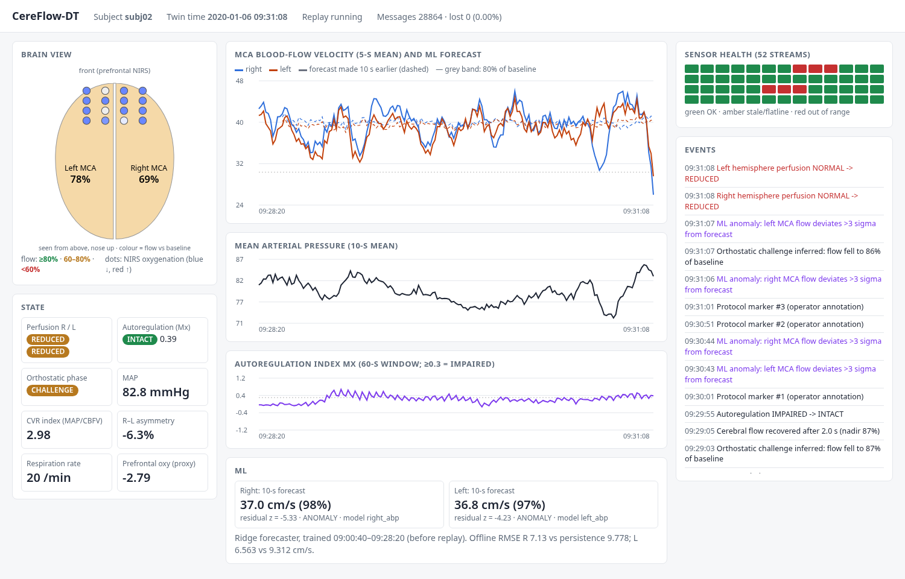

A digital twin that watches the brain's blood supply, live.
69%
When one of our volunteers stood up, blood flow in the right side of the brain fell to 69% of normal within seconds. Our twin noticed. Would your monitor?
When one of our volunteers stood up, blood flow to the right side of their brain fell to sixty-nine percent of normal, within seconds. In a healthy person, that's harmless. After an aneurysm bleed, it can mean a stroke. This is CereFlow-DT: a digital twin that watches the brain's blood supply, live.
CEREFLOW-DT01 / 06
01 · The problem
Monitors show waveforms. Clinicians need answers.
1
Is enough blood reaching each side of the brain?
Compared with this person's own baseline, not a textbook average.
2
Is the brain still holding its flow steady?
Cerebral autoregulation: does flow just follow blood pressure?
3
Is flow about to drop, and can we trust the sensors?
Early warning, broken-sensor detection, and a model that says when it's unsure.
FORClinicians running stand-up / tilt testsNeurocritical care after an aneurysm bleedEngineers tuning the monitoring
Bedside monitors show raw waveforms. Staff must work out three answers in their heads. One: is enough blood reaching each side of the brain? Two: is the brain still keeping its flow steady? Three: is a drop coming, or is that alarm just a loose sensor? CereFlow-DT answers all three, continuously.
CEREFLOW-DT02 / 06
02 · How it works
Real recordings in, live brain state out
52
real sensor streams of 4 types: Doppler, blood pressure, breathing, NIRS
64k
time steps across 10 healthy adults, ~33 min each
4
derived states: perfusion, autoregulation, posture phase, sensor health
10 s
flow forecast per hemisphere, trained only on data before the replay
DATA · PhysioNet "Cardiorespiratory response to orthostatic stress" v1.0 · Mukli et al., Front. Physiol. 2021
We use real recordings from PhysioNet: ten adults, fifty-two sensors, thirty minutes lying down, then standing up. A replayer streams each sensor over M-Q-T-T with its original timing. The twin turns those streams into four live states and forecasts blood flow ten seconds ahead. And because everything goes through the broker, a live patient feed could replace the replay.
CEREFLOW-DT03 / 06
03 · What the clinician sees
The moment subject 02 stands up

1
2
3
4
5
1Brain map left side at 78%, right at 69% of this person's baseline.
2State both sides REDUCED, phase CHALLENGE, autoregulation still INTACT.
3Forecast the drop breaks the 10-second forecast, so it's flagged as an anomaly.
4Sensor health red cells are NIRS channels with bad contact, flagged automatically.
5Event log every state change, time-stamped.
This is subject two, standing up. The brain map drops to seventy-eight and sixty-nine percent. Both sides read reduced, phase challenge. The forecaster only learned rest, so it flags the drop as an anomaly. Red cells are loose sensors it found on its own. And every change goes into the event log.
CEREFLOW-DT04 / 06
04 · Does it work?
Measured, not promised
19/20
hemispheres where the 10 s forecast beats "no change"median 27.5% lower error
0
messages lost at up to 20× speedreplay timing within 0.4% of target
100%
of known faulty sensors flaggedauto-switches model when blood pressure fails
6/10
stand-ups detected, 3.7–16 s after standingwith hand-set thresholds; tuning is next
Every number re-checked by one script python verify_report.py29 / 29 OK
We measured it. The forecast beats "no change" on nineteen of twenty hemispheres. Zero messages lost at twenty times speed. Every known faulty sensor flagged. Stand-up detection is six of ten: our weak spot, and next to fix. One script re-checks every number.
CEREFLOW-DT05 / 06
05 · What's next
From toy twin to bedside twin
Tune alarm thresholds on held-out subjects to lift 6/10 detection
Add a live "coupling network" view of heart, breathing and brain, after Mukli et al. 2021
Validate on patient data after aneurysm bleeds
One ask
The dataset has elapsed seconds, not dates. We anchor it to a fixed, configurable start time.
Can we confirm this counts as an absolute timestamp?
CereFlow-DT: know the brain is getting enough blood, before it isn't.
Next: tune thresholds, then patient data. One question: the dataset has seconds, not dates, so we anchor a fixed start time. Is that acceptable? CereFlow-DT: know the brain is getting enough blood, before it isn't. Thank you.